Woe, make me your student
Devine Lu Linvega's journal
2025
19P
2025-08-10 Liud a Solresol
Midau Wiktopher a Solresol do tam, de tiu miusi, tout'lotau tiu momau.
Gajewski lel'lat dauda, fedi sir, fiu mausa, lel ted foul.
Saufau か a Japanese fot lel, "sol" a Solresol tout'lotau fa siufou!
Mita, sili'sito mi ril, Thue sili'ses fa lefiu. A sito, mou tiufau fiu mal, mouso lar'tiufau re REPL tiu sefiu.
19O
2025-07-28 Workout Routine
I've received a few messages asking about workout plans, and
like I've said before, I am the last person you want to take advice from. I'm
merely writing these down for the sake of being able to look back on what I
tried. My aim in all this is to build just enough upperbody strength so that I
can do a muscle-up when spring rolls in. Unless you're
already somewhat deep into your calisthenics journey, I wouldn't try
replicating any of this.
We're already a few weeks deep into summer, so I want to look back at how
working out aboard actually worked out. Our life aboard has been much
too chaotic to allow for any kind of pattern, so I can't say that I've
developed anything like a routine, but these are the predictably recurring
exercises that I've enjoyed doing every single day:
- Rowing: 10min.
- Dips: 1x10.
- Dead-Hang: 2x60sec.
- Pull Ups: 1x10, 2x5.
- Hand Grippers: 10x50lb, 10x100lb, 5x150lb.

19N
2025-07-18 Polycat
Spent a few days making Polycat with Rek for Catjam
2025. It was a nice distraction from the Uxn book and an
opportunity for us to make a little platformer together. We worked on the game during our sail up the west coast of Vancouver Island on our way to Ucluelet. We had a few days of downtime along the way,
when we were anchored and surrounded by hummingbirds, making sure that our strange little cat could make it over the obstacles.

19M
2025-07-01 Tent
A couple of months ago, on the train to Strange Loop, I had the good
fortune of sharing a cabin with Anders, whom I had just met and who
shared with me a way of guessing at the correct settings for shooting with a
broken light meter using a technique called Sunny-16. Unfortunately, by
the time I had made it back home, I couldn't recall how it all worked.
I just spent the past few days anchored by Blakely Island, wandering into the
woods holding old film cameras with a few friends,
which I am now gladly counting Anders among them who spent
time with me to go through the motion once again using my own Voightlander and
its broken light meter.
Sunny-16 goes something like this: At f-16, with the shutter speed at
about roughly the film speed, should turn up a good picture on a sunny clear
day. From there, one can work their way down the f-stops, so that at the speed
of the film, f-8 would be a cloudy day, f-4 an indoors picture, and so on.
- I've read the Silmarillion, dear lord.

19L
2025-06-09 Working Out
Before casting off from Victoria, we wondered if it'd be enjoyable, or even
safe to work out aboard Pino. It did take a bit of getting used to at first,
but we've eventually both fallen into a daily habit of doing pull ups from the
companionway, dips with the cockpit seats, seated rows by trapping a resistance
band around a winch and lat pulldowns from the boom.
One of my projects for the next few years is to raise my grip strength enough that
I can reliably close down a 70kg hand gripper, so every evening, I pull out a
book or a video(solar permitting) and do hand exercises for an hour or so.

19K
2025-05-31 Haul Out In Texada
While we are hauling out Pino, my laptop is safely
storaged in the chart-table. In this idle time away from the keyboard, I
daydreaming about strange finite-state machines.
- Expanded documentation on Uxntal Validation.
- Created an interactive Modal Playground.
- Implemented Modal in Uxntal and improved examples.
- Enjoyed re-reading Loeliger's Threaded Interpretive Languages.

19J
2025-05-24 Cast Off
It's happening! I've begun drafting a rough layout for a tentative book
project, for which the working title is currently Turnip Complete. I
don't know if I can actually go through with this idea yet, but I'm going find
out over the summer, and hopefully have something to show in the fall. The idea
would be to have a paper artifact that contains everything that currently makes
up the Uxn/Varvara ecosystem, from implementation details, to language
specification; all from basic principles.
We're just about ready to cast off from Victoria for the summer, and today was
my last day at the gym. I pushed hard these past few months, and it's beginning
to pay off. The back pains I had are gone, I sleep much better, I feel stronger
and clothes even fit me better. I gained 10kg, and I'm hoping to reach my ideal
weight of 80kg in the next few months. I have plans to work out from aboard Pino, but in practice, I'm not sure how possible, or safe,
it'll be..

19I
2025-05-05 For The Future
Over the years, by haphazardly filling-in missing details to the docs as
questions arose, I've let the Uxntal language pages
grow into a tangled and overgrown labyrinthine mess that oftener threw folks
into opaque dead-ends than answer questions.
This week, a pointedly cutting criticism of the Uxn documentation shook me out of
the laissez-faire that I had over these few pages and reminded me how letting
it go the way I did was a disservice to others, but especially myself,
considering that I may be using this tool, possibly for the rest of my
life.
Since I couldn't clearly discern what should and shouldn't be there, I've
asked for help, and got excellent ideas. With feedback from both new learners
and experienced folks, I rewrote most of the documentation, included new
examples, expanded tests and added setup instructions for both Uxn, and
Varvara.
Looking at the documentation now, I feel like I would very much like to work
on writing a book about it, to have a paperback artifact in the style of
Henderson's LispKit Manuals. A treatise on the design and
implementation of the system from the bottom up, but plastered with
drawings.
- Wrote 10 examples for the revamped Uxn REPL.
- Made a graphical version of Drifblim.
- Changed behavior of lowercase jumper operators in Orca.
- Enjoyed Ryan Coogler's Sinners.

19H
2025-04-13 Paper Paper Paper
I was recently reminded of that paper about how flat origami is Turing-complete, and of how I never
did attempt to fold one of these for myself. I've already written about a paper computer and all the ways in which
computer emulators can be operated on paper, but nothing on using the paper
itself for doing the computation. So I set out to correct that, and all the
while learning how to do hexagonal folds for the first time.
Another thing on my plate has been to gradually getting rid of Uxnasm.c in favor of the self-hosted one. Before I entirely drop that
dependency, I want to be absolutely certain that the bootstrapping process is
as robust as I could possibly make it. I'm not 100% happy yet, but uxnasm.c is
getting closer to retirement.

19G
2025-03-30 Spring Skates
Spring is finally poking its nose in Victoria and messing around on the
computer is the last thing on my mind at the moment. But I did find some time
to make a bit of non-sense with Flick, and improve the
Solresol documentation.
- Mesi Ses Sel do sefiu.
- Added opengraph tags to the wiki.
- Put on my new skates.
- And, rushed outside listening to Hideki Naganuma!

19F
2025-03-16 Flick Game
I recently came across Increpare's lovely Flickgame project. It's a kind of slideshow program and
game engine in which scenes are navigated based on which color is clicked on. I
didn't see myself using the javascript implementation, and since this elegant
idea was so straightforward, I figured I might as well spend a day to port it
to Varvara.
I took the opportunity to improve things a bit and made it usable on the
NintendoDS. Once I had a working version, I wrote a compiler for flick games to
uxn roms, so I could share the results. And then, I started drawing little
stories, and then some. How about a #flickjam?
- Implemented a port of Flickgame.
- Redesigned Turye.
- Enjoyed two months sober.

19E
2025-03-05 Process
For a while now, I've been feeling like I've sort of maxed out on programming, not to say that I know everything
there is to know about the topic, but that I've learned enough to shape software
in exactly the way I need to tackle the problems I typically need programming
for. So I've been turning my gaze into other domains of life which I've all but
neglected while on this creative coding journey.
I've ramped things up a notch these past few weeks and dedicated more time to
learning about fitness, nutrition, anatomy and getting a bit smarter about
the way I work out. This new fascination of mine is teetering close to a full
on project, when even on rest days, a sizeable chunk of my waking hours goes
into reading about related topics and planning the next day's exercises and
meals. I might just keep on pulling on that thread to see where this leads. A
nagging voice in my head keeps going on and on about how this might just come
in handy in the very near future.

19D
2025-02-18 Faeputing
I've had various little undocumented utilities
hanging around that didn't share a clear connection in terms of design. I
recently needed a desktop calendar to track some personal stats and decided to
riff on Note Pad for its UI, which is itself already
a port of the classic Macintosh program. To tie it all
together, I gave the same treatment to the music player, which was inspired
from the first generation iPod. They all look really nice next to each other
now.
- Ah yeah, I also wrote a spreadsheet editor.
- Object-oriented stack machine assembly is such a joy!
19C
2025-02-01 Monochrome Oquonie and Neural Nets
Trying to bridge the gap between rewriting
systems and interaction nets, I gave a
second look at McCulloch & Pitts neural nets. I
was curious to see if this would make for a fun and readily parallelizable
language runtime, so I went ahead and spent the better part of the past few
days designing one.
I haven't used it for anything serious yet, but already with as little as 150 lines of code it allows me to
quickly prototype and evaluate tasks! My plan is to use it as a sort of
coordination language.

19B
2025-01-25 Handmade Conference Post-Mortem
Some months ago, attendees of the Handmade Seattle conference expressed their
grievances with the conference in regards to its pivoting to include talks with
mentions of social justice awareness and a slightly more diverse panel of
speakers, at the cost of the usual guy-packs-bytes-in-the-right-sequence
talks. Which I have nothing against as someone who tend to give talks of
that exact flavor.
In any case, the conference organizer apologized for the poor selection of
speakers which did not correspond to the expectations of ticket holders,
promising to resolve the issue in the following year, and in passing, that free
and open source software developers would no longer be welcomed as
speakers.
I happened to be present in the chatroom when the apology letter went out and
merely questioned whether the choice was really about the lack of
low-level talks, and not something else. It did not take long for
bigots of all sorts to come out and lament the good old days of the conference
and soon the chatroom was ablaze with some pretty vile things against trans
people, this went on for hours without intervention, the usual.
What I did not expect was for the conference organizer, who ghosted me for
months, to finally break radio silence to slam me for speaking out and
partially blaming me for the unraveling of the conference organization, and
decided against covering the agreed upon travel stipend. I have since
requested for the talk videos to be removed.
So why is software so terrible?
We made it terrible.
The Handmade Manifesto

19A
2025-01-11 Langdev January
It has become something of a yearly ritual to take the first few days of the
year to write a new implementation of the compiler
I use daily. It serves to see how my programming style and solutions to these
now familiar problems might have evolved, it also ensures that the language
itself doesn't grow beyond what I am capable of implementing in at most a
week's time.
The most discernible difference in this new implementation, is that it leans
heavily on object-oriented patterns, by
favoring methods acting on private values, over pointer arithmetic by function
application. The stack is principally used as the communication channel between
objects, for example, a text object's buffer is only ever modified through its
explicitly defined capabilities, not by a function taking a text pointer. It
turns out it limits bugs, it is faster and even often smaller!

2024
Finish packing, we're going on an Adventure. Where to? north. North?
But, north where? North! And with that in mind, we spent the better part of
the Spring loading Pino with enough food, supplies,
warm clothes and spares to sail as far north as we physically could take it,
through difficult waters, harsh weather, in a small vessel with an open
cockpit.
A few improvements later, we slipped off the dock and started our climb up the
coast, all the while attempting to work on whatever could be accomplished with
one hand, while fending off the sideways sleet with the other. Somewhen during
that time I found myself falling deep, way deep, into rewrite languages and implementing just about every
rewrite system I could sink my teeth into while summer was gradually catching
up with us.
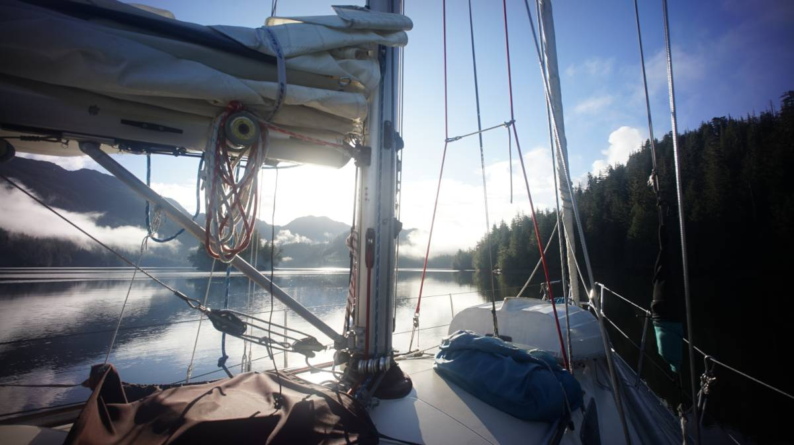
We didn't found much up there except for moss-blanketed trees, talkative
peanut stealing ravens, erupting whale spray and time, so much time.
Time to read, feed the woodstove, write, doodle, mend clothes, swear at algae
clogging up the water intake, think, look outside even if there's little else
than what I just enumerated other than the occasional bear swimming, loose you mind,
right, at seeing a bear for the first time. But in all, only ever seldomly an
other boat, almost never a sailboat.
Eventually we got fed up with all this debilitating beauty, its black
flies, and started our way back down, all the while writing a lot of fractions, drawing lots of characters hanging from the edge of cliffs,
scribbling lots of undecipherable slides and reading the occasional unforgettable novel.
This exhilarating year ended with a visit to see our families and friends,
and vaguely gesticulating away questions regarding what comes next.
For the year of 2024, Beryl Markham's West With The Night, was my favourite
book. J. Wickham's Yintah was my favourite documentary. Alcest's Les Chants de l'Aurore was my
favourite album.
18Z
2024-12-29
I've been trying to take it easy, but it has been difficult. I haven't been
able to consistently save a rest day between social events like I hoped.
So, I savour each little quiet inbetween moment I can find, whenever in transit or
waiting for guests to arrive, stealing a bit of time to read and relax.
How dearly I wish I had time to write more, and if I hadn't left our
camera aboard, take some pictures.
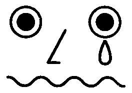
18Y
2024-12-13
Spending the holidays with family, between eating and sleeping too much, I
sometimes sneak in a few moments on the computer to listen to music and tackle
a few curiosities, but otherwise, I'm trying to keep off the keyboard.
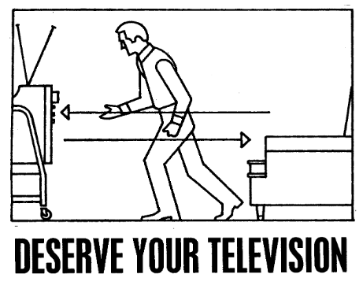
18X
2024-11-24
Back from Seattle, where I had the immense pleasure of sharing a few days
with kind, passionate and most of all wonderful
individuals, some I had crossed paths with already, others, new faces that I am
now looking forward to see once more. Evenings were busied with conversations
that felt as easy as picking up where we might have left off despite not having
seen each other for years, or even when meeting for the first time.
I was curious to see whether using creative storytelling to give a talk about computation would resonate with the Handmade
attendees, fortunately, based on what echoed late into the night within the
halls of the Mediterannean Inn, above tables covered with zines and whiteboards ornate with hastily scribbled rewrite rules, most people got it. I hope that
my loveletter to the work of Borges, Conway and Wryl, will be an invitation to
explore the space of rewriting, while remaining critical of the trajectory of
computing.
18W
2024-11-06
October came and went, ideas piled up in notebooks, but I kept on drawing. I
knew already by the time I had finished the Pocket Rewriting zine that I would make a
dynamic implementation of it which, by the way, was very well received despite
my not having even had a chance of giving away a single one. I was delighted to
see folks print their own copies.
These past two weeks have been a throwback to the release of Orca, where the less programmatically inclined
started playing with it right away, and those with preconceptions about what
programming is, what it should look and work like, found it inscrutable and
opaque. To some, the booklet remains near undecipherable. I will try to help
bridge that gap with more approachable documentation and examples over the winter.
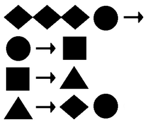
18V
2024-10-23 Inktober II
Three weeks! I think that was the longest I went on without writing a single
line of code for the past many years, for even during long transits at sea, I
find time to sneak some in to answer these questions one ponders while gazing
at the horizon. I had other things on my mind this month, slides to finish,
dailies to draw, and settling back in our winter life in Victoria. As of
yesterday, that streak ended.
For a upcoming event, I wanted to be able to show anyone who
might ask a few simple examples of rewriting computation in a way that would
not be intrusive during a conversation, so I printed a zine that covers the basics of it, basics that I could
foresee myself repeat over again and having a challenging time doing so without
visual aids, rewriting being inherently a visual coding paradigm.

18U
2024-10-07 Inktober I
This is what I should have done last year when between the research for Strange Loop, daily maintenance of active projects, and
implementation of new ones, code was what I only ever read or wrote about for
weeks on end. By the time winter came, I was fed up with all of it. If
everything works according to plan, I'm well on my way to not writing a single
line of code this month.
It can all wait 'til November.
18T
2024-09-27 Loosing the plot
I finished my slides but I left in them some gaps to fill with puns, and
other miscellanea. There's this one where a whole culture of people is
programming entirely by multiplying fractions,
y'know what would be ridiculous? If I had actual examples, or even
implementations of classic functions to show the attendees. Not only that, how
better would my point be made if I built enough documentation to teach people
and even wrote games for it.
It has been 4 weeks now, I have vivid dreams in which I reduce the number of
steps it takes my fractions to find the Fibonacci sequence, I have written 3
different implementations and sit on enough material for a
whole extra talk of its own, or at least enough to bore a whole amphitheater to
tears. — Have we lost the plot yet?
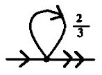
18S
2024-09-09 Fractranfooding
We are again in familiar waters, with their familiar weather radio voices,
tugboats, madronas, lean little swallows, cormorants, banana slugs and
extremely bitter IPAs. We wake up and it's still dark out, summer must be
slipping away; the sun looks all burnt up, red and angry against the morning
haze. The music aboard is changing to an appropriate shoegaze, as if to match
the rustling of leaves and wailing of the wind passing through the shrouds.
Six or seven months has been enough to fall so far behind software updates, to
miss just enough versions, that even the part of the program that looks for
updates doesn't recognize the new server endpoints. As expected, most updated
things got worse, a few of them became quite awful, as it typically goes with software. A friend
uses necrotic as opposed to bitrot, because bitrot implies things have
been left to decay but software necrosis is rotting while being alive and
maintained.
18R
2024-08-24 Fractalfooding
I always fall within visible range of a technical solution needed to solve
some generic software issue tormenting me but ever so far as to not be capable
of navigating the tool-chain involved in applying said change to its source,
and so it goes, each time this occurs a new software is born to replace it.
Years melt away, no tool-chain moat is ever bridged, programs of every shape
and form have been transcended, the dogfood thoroughly consumed. "Blessed!",
for the transformation of the damned into doghood is complete.
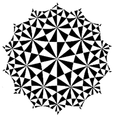
18Q
2024-08-13 Back to Hathayim
We finally emerged from the fog bank that haunts the north of the island, and
sailed into the remains of a familiar Desolation Sound summer. The sound of
dinghies being pulled up the beach, dry mosses crackling under your feet. Do
our legs remember how to walk, where are the fair weather clothes, put away the
firewood, the sun is setting, catching up with friends, our time apart has it
been years, no, we have just seen you haven't we. How was it up there? Was it
fun.
How near to good is what is wild.
It's time to manifest all these thoughts scribbled in transit. I need to
finish up the slides for the upcoming talk, and the
music for the upcoming show, and, and time is ebbing!
- Found a neat optimization of the Uxn core.
- Made a few contributions to Kodiak.
- Added macros support to Drifblim.
- Wrote a Fractran runtime and updated notes.
18P
2024-07-19 Roudo Ses
The automated weather radio voice drones about the advent of favorable
northerly winds that never manifest, so we've resorted to doing short hops,
weather permitting, between the safety of one inlet and the next whenever the
storm catches its breath, often against tide, oftener against wind. We occupy
the disquieting lulls of what feels more like trench warfare than passaging
drowned in tea, blankets and the smell of paperbacks.
I've also kept busy revising some of the Solresol
poetry in Wiktopher. In R. W. Kimmerer's Grammar
of Animacy, she says that 70% of words in Potawatomi are verbs, as opposed to
English in which only 30% are. Through the lens of an animist language, the
hill is less there, than there is occupied at being a hill. She
puts it succinctly in "A bay is a noun only if water is dead".

18O
2024-07-19 A Halo Around The Sun
The inlets we find ourselves anchored in are worlds of their own with
inhabitants that, as transitory as some may be, are affairing themselves with
happenings that extend to the shores of the lagoon, but no further. A
strange new thing has come into the sheltered water and disrupted its hubbub,
now everyone looks as if caught in a gasp, at its skyward pointing wing, at its
opaque lifelessness. Through the oblong eyes of the vessel, like under a
diving bell, we peer back in wonder.
There are as many days to our bow without connectivity than those that lay
between our stern and Prince Rupert, where we were last able to make contact.
In these secluded days, I am reminded of a passage from one of Thoreau's
journals that reads the inscription on a Swedish inn:
You will find at Trolhate excellent bread, meat, and wine, provided you bring
them with you!
- Progressed toward a Markl prototype.
- Improved Uxnfor to better handle OOP formatting.
- Wrote for Malleable Systems Collective's Fearless Extensibility.
- Took care of many small tasks for the wiki that I
had been putting off, such as improving categorizing and removing redundant
pages.
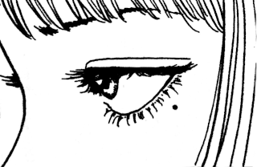
18N
2024-07-12 Southward
We twice waved farewell to Sitka. A few hours after untying the lines, the
engine that normally cycles water through itself to cool down decided that it
would not do that anymore. The problem appeared to have gone away after some
tinkering, only to return further down the coast, precipitating an emergency
arrival in some questionably-sheltered flies-infested inlet hidden past but a
few jagged rocks that the ocean breakers have as of yet unsuccessfully softened.
We dropped the anchor, slept, slept some more, once our strength returned, we
had to seriously take things apart and figure shit
out.
A single persimmon
left in the sky;
picked for me.
For as long as Uxn has been around, I've meant to resume and complete a puzzle
game that Rek and I wanted to build after Oquonie,
called Markl. During these recent night passages I've
spent my watches playing the game out in my head, and arrived to an exciting
place with the design. I've started implemented it the moment we reached
port.
- Wrote a track for a Diablo tribute cassette.
- Added binary data pasting to Left.
- Enjoyed the haikus from Santoka's teacher Seisensui Ogiwara.
18M
2024-06-25 A sensibility for the useless
We have sailed as far north as we are willing to go this year. As the summer
weather settles, heading further would mean crossing longer distances with
decreasing chances of favorable winds, less sailing and more motoring, which
does not appeal to us one bit. We'll head to Sitka before making our way back down to warmer waters and enjoy what remains of the summer free
of foul-weather jackets.
Spend enough time in the esoteric programming circuit and you'll come across
the usual suspects: self-generating programs, polyglot programs and quines; but
until this week I had never heard of ambigram/palindrome programs, which that
can be evaluated from either directions. Naturally, I had to have a go at it,
and I've added it to my growing collection of
labyrinthine programs.
18L
2024-06-14 Endless summer days
Alaskan summer days are long, the sun wakes us up at 4am, and it stays bright
until 11pm. By 5am, the batteries are already topped up from solar, if we were
very motivated, we could solar-cook every meals each day.
I occupy the few moments we have between sails by knocking down tasks I had in
my notes for a while, like making a disassembler and cleaning up the web emulator enough
that I can use it to show programs on wiki pages, like bifurcan and wireworld.
18K
2024-05-30 At the Alaskan border
Sitting aboard Pino in the last port in Canada before entering Alaska, thinking about
how odd it is to be sailing straight from the south and having to change
timezone. We've been moving every day of the past two weeks, making use of the
favorable wind to jump from anchorage to anchorage. During these long passages,
I try to write the talk for Handmade in my head.
Abner, who organizes the conference, asked me specifically to explore other ways to live with the attending creatives and
developers affected by burnout or the mass layoffs. I've had Edna St. Vincent
Millay's poem in mind these past few weeks, it goes:
Safe upon the solid rock the ugly houses stand:
Come and see my shining palace built upon the sand!
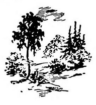
18I
2024-04-27 String rewrite III
We've stowed away our 120v devices, untied the lines and begun our sail north
to Alaska! During the next few days, we will sail
through the inside passage and out the northern tip of Vancouver Island. As we
hop between anchorages, I wonder if a graphical
environment running on a naive string
rewriting computer possible, or even usable?
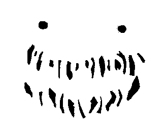
18H
2024-04-13 String rewrite II
Rek and I are completing the remaining projects on our pre-departure list and
provisioning for our sail to Alaska. Over the winter,
we've strengthened critical parts aboard Pino, replaced
experienced pieces of the rigging and simplified the habitat's life-systems
— Hopefully, this will all make the journey safer, and dryer.
After exploring Wryl's Modal language further, I
decided to write an
implementation to better understand how it worked, mechanically. This
sparked a renewed interest from the original creator, attracted members of
catlang community to explore string rewriting and has given me long and
delightful evenings pondering about how to crack various programming problems
with it.
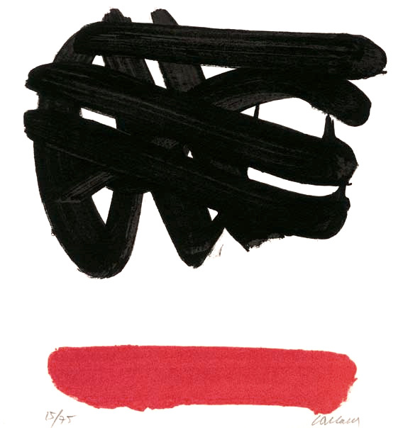
18G
2024-04-02 String rewrite I
We are waiting for a few parts that we had machined, to return to us from the
local fabricator. While we wait, I spend most of time playing with esolangs,
one that has especially interested me lately is Modal,
which is a simple string-rewriting scheme similar to Thue,
but with the added feature that it allows for variables, and recognizes scope
delimiters. It's a brutally simple idea that allows a program to be shaped as
to mimic nearly any programing paradigm.
I had been reticent to expanding the Uxntal
macro system because of how it creates disjointed fragments of code that
couldn't be properly optimized, but after talking to people writing programs in
which macros were definitely the right tool for the task, I've decided to
rewrite the implementation and make them more robust.

18F
2024-03-21 Catlangs
As days are getting warmer, we can begin to tackle some much needed
maintenance topside like changing old lines, varnishing the oars and inspecting
the rigging. After a whole winter of getting up in the dark to do weight
training, I feel it was well worth it as my back pain is gone, I sleep better
and feel more overall physically capable. I have a month left of gym membership
and plan to make use of it as much as I physically can before its expiration,
and our casting off.
I've spend the idle hours of these past few days improving Left, thinking about concatenative programming and trying to better
understand what makes a language concatenative. To try and answer this
question, I've asked members of the catlang community to add example programs
for the various flavors. One of these examples was the Tak
Function which was new to me, and found it to map surprisingly well to
stack programming.
- It's just been too nice outside for any more computer musings.
- Enjoyed Henrik Karlsson's Third Chair story.
18E
2024-03-10 Left revamp
We took Pino's chainplates off and while the new ones
are being fabricated, we reinforced the area where the chainplate meet the
deck. It makes for a momentarily uninhabitable place to live, so I haven't had
much headspace to do creative work these past few days, but it will be well
worth it considering the places we're hoping to venture into.
Whenever I get to reclaim my desk from the pile of tools and materials that
took residency on there, I fool around with UTF-8
encoding support in Left. Looking into how diacritics
can be appended to other glyphs, I've begun to consider if I couldn't possibly
encode the Uxntal Alphabet entirely from
pre-existing glyphs within the two-bytes range and use diacritics for
modes.
- Made a few improvements to Left's support for UTF-8.
- Rewrote the uxn.js, it now passes the opcode tests.
- Added example programs to the concat wiki.
18D
2024-02-25 Hello, Dot?
Our plans for the summer are coming into focus. It looks like we'll depart
early, head as far north as we can make it, and see if the boat and its crew
can weather the cold. This ought to give us taste of what we might expect would
we decide to make it further into the arctic next year.
Someone found an interesting undefined behavior in the assembly of Uxn code,
where the nesting of child labels could be
implemented in one of two ways, leading to an incompatiblity between
assemblers. I've explored this further and found myself pulled me into a
concatenative object-oriented programming rabbit-hole.
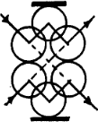
18C
2024-02-11 Conlang Weekly
Other than doing improvements aboard, it has been a month of playing
with conlangs and conscripts. I begun exploring variable
length glyphs in Left after adding support for the
Lambda(λ) character last month, and went further still by supporting the Shavian alphabet. I had been looking for an alternative
alphabet for a while and loved its 48 letters, the symmetries in the glyphs and
how easy it was to learn
it.
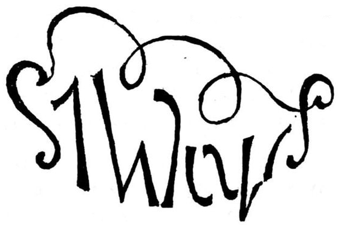
18B
2024-01-26 Back to music
I've originally started looking into virtual machines to build a target to
host some games, a handful of tools and my wiki — but instead of stopping
once I had done so, I kept pushing further and became obsessed with this
programming language design stuff, and along the way, I lost track of why I was
even doing it all in the first place. After a two year detour, I look back and
I've almost totally ignored my other interests as a digital artist and
musician. It's about time I find my way back.
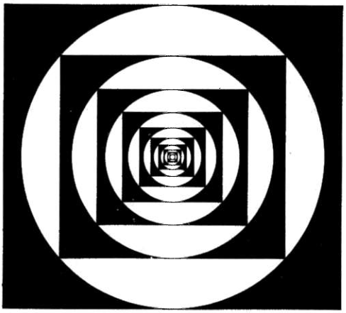
18A
2024-01-13 Maintenance
The forge that we use at Hundred Rabbits has been taken down by DDoS attacks and
is struggling to come back online, the event reminded us that we ought to also
have mirrors and release versions of these source files available elsewhere. I've begun
to host copies across our various websites. The builds are still
accessible through itch.io.
Until we regain access and release the changes of the last few days, keeping
with the spirit of improving the resilience of the tools we use I've taken a
moment to write a kind of pocket version of the console emulator and self-hosted assembler as to see how many lines are
needed to start from the seed assembler and replicate it. A copy of the pocket
emulator, the source for the assembler and its hexadecimal representation have
been added to the wiki.
In the meantime, if anyone is looking for a specific file that is currently
unavailable, get in touch!

incoming home events blog
{kind=link}